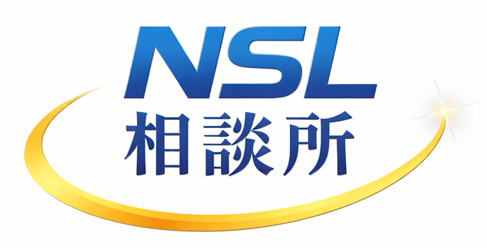
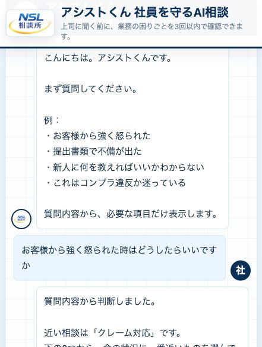

💸
固定費が重い
通信費、ツール代、外注費が増え続けているのに、どこから見直せばいいか分からない。

NSL相談所は、固定費の見直し、業務整理、社員教育、クレーム一次対応までを一緒に整える伴走型サービスです。AIを入れることが目的ではなく、現場が楽になり、判断が早くなり、売上につながる形まで落とし込みます。
個人事業主や中小企業は、数字管理、人材育成、日々の判断まで少人数で抱えがちです。だからこそ、難しい仕組みではなく、現場ですぐ使えて、安心して任せられる導線設計が必要です。
通信費、ツール代、外注費が増え続けているのに、どこから見直せばいいか分からない。
LINE、紙、口頭、担当者任せが混在し、確認だけで時間が消えてしまう。
新人教育が属人化し、教える人によって内容がぶれて、定着率も上がらない。
クレーム、労務不安、判断相談が社長に集まり、本来やるべき営業や戦略に時間を使えない。
難しい仕組みを押し付けるのではなく、現場で回る順番に並べ替えて、利益につながる形に整えます。
通信・システム・運用コストを洗い出し、無駄な支出を止めて、利益が残る体質へ変えます。
相談、申込、確認、教育の流れを整え、誰が見ても同じ動きができる状態にします。
質問対応、教育補助、社内案内をAIに任せて、社長と管理職の負担を軽くします。
数字訴求は強いですが、大事なのは「時間が空いたあとに何へ使えるか」です。営業同行、社員面談、紹介づくりなど、本当に価値の高い仕事へ時間を戻せます。
同じ質問の繰り返し対応を減らし、必要な相談だけが上がる状態へ。
新人や現場スタッフへの基本説明をAIが補助し、教える負担を圧縮。
確認先を減らし、判断材料がそろった状態で管理職に届く導線づくり。
社長や管理職がいつも受けている相談を、AIが前さばきすることで、現場の安心感と判断スピードが上がります。
ハラスメント対策は「厳しく言わない」だけでは不十分です。感情が上がる前にAIが間に入り、言葉選びと対応順を整えることが重要です。
忙しい現場では、パソコンを開く前にスマホで確認できることが重要です。相談、確認、回答の流れをその場で回せるように設計します。

導入して終わりではなく、現場で回るまで一緒に整えます。使われない仕組みは意味がないため、運用定着まで支援します。
必要に応じて現場へ伺い、実際の流れを見ながら整えます。
すぐ確認したい時はオンラインで迅速にサポートします。
誰が見ても分かる手順書にして、教育コストを抑えます。
運用後も見直しを行い、より楽に、より売れる流れへ育てます。
特に、社員との距離が近く、相談が経営者に集まりやすい会社ほど効果が出やすい設計です。
現場も見ながら経営もしているため、判断負担を軽くしたい会社に向いています。
人によって教え方が違う、伝わり方が違うという悩みを減らしたい会社に有効です。
クレームを減らし、安心感ある対応でリピートや紹介を増やしたい会社に合います。
何をAI化するべきか分からない段階でも大丈夫です。固定費、教育、相談対応のどこが重いのかを整理し、御社に合う導入順をご提案します。